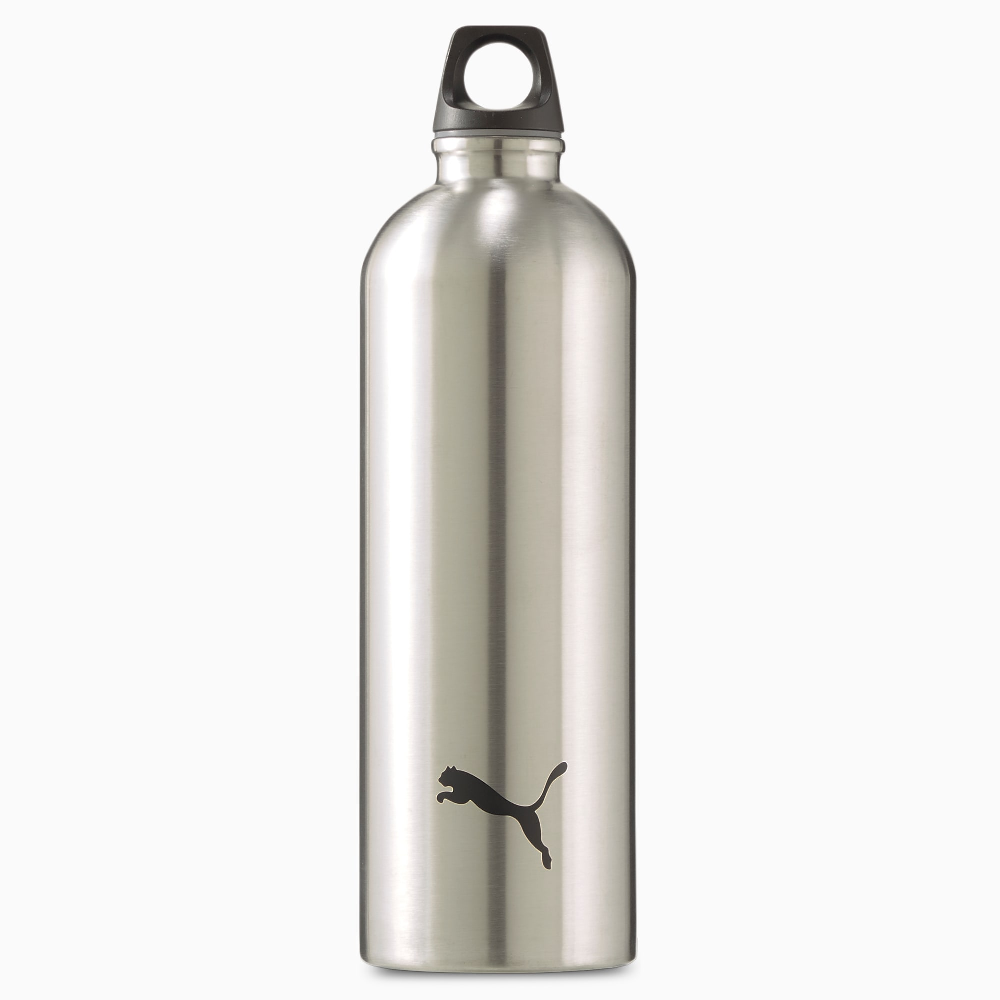

Image recognition
Which is better? MobileNet or Microsoft Azure?
Im gonna test 4 objects; bottle, toy,book and pen and see which is more accurate.

Microsoft azure: Bottle
MobileNet: Water Bottle
Microsoft azure: Bottle
MobileNet: Water Bottle

Microsoft Azure: bear
MobileNet : Mask
Microsoft azure is more accurate
Microsoft Azure : book
MobileNet : comic book
Microsoft azure is more accurate
Microsoft Azure: writing implement
MobileNet : umbrella
Microsoft azure is more accurate